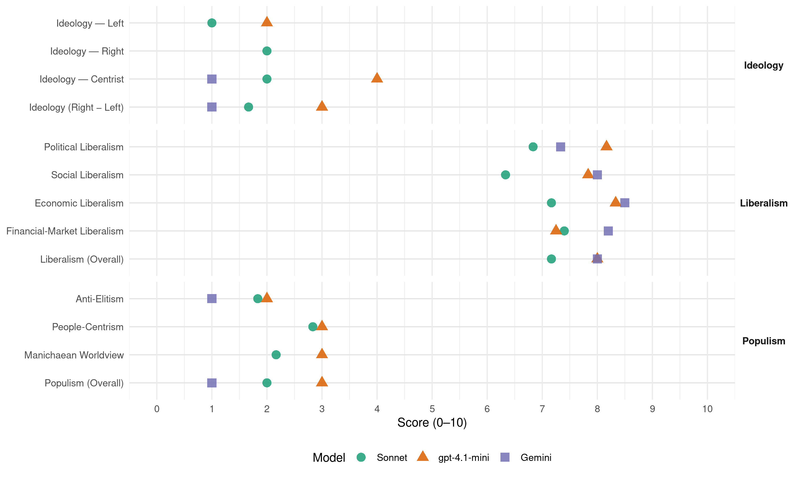

National (New Zealand, 2014)
manifesto_id 64620_201409
Get full text: This site shows derived annotations and short verbatim quotes only. The full manifesto text is © Manifesto Project / WZB — obtain it via manifesto-project.wzb.eu using the manifesto_id above.
Headline scores
| Dimension | Sonnet | gpt-4.1-mini | Gemini |
|---|---|---|---|
| Populism (Overall) | 2.0 | 3.0 | 1.0 |
| Anti-Elitism | 1.8 | 2.0 | 1.0 |
| People-Centrism | 2.8 | 3.0 | – |
| Manichaean Worldview | 2.2 | 3.0 | – |
| Ideology (Right − Left) | 1.7 | 3.0 | 1.0 |
| Liberalism (Overall) | 7.2 | 8.0 | 8.0 |
| Political Liberalism | 6.8 | 8.2 | 7.3 |
| Social Liberalism | 6.3 | 7.8 | 8.0 |
| Economic Liberalism | 7.2 | 8.3 | 8.5 |
| Financial-Market Liberalism | 7.4 | 7.2 | 8.2 |
Evidence per dimension
Economic Liberalism
Gemini · score 9.0 · verified · chunk 1
“businesses can thrive and consumers are protected”
regulatory environment is world class, so businesses can thrive and consumers are protected. We want to see New Zealand
Gemini · score 8.0 · verified · chunk 2
“Competition is the best way to keep downward pressure”
renewable sources like hydro and geothermal. Competition is the best way to keep downward pressure on the retail price of electricity.
Gemini · score 8.0 · verified · chunk 3
“facilitating competition in the building materials”
reducing compliance costs, improving sector productivity, and facilitating competition in the building materials market.
Gemini · score 9.0 · verified · chunk 4
“National supports free trade”
National supports free trade. We will continue to progress free trade deals
Gemini · score 9.0 · verified · chunk 5
“favour an open economy”
National will always favour an open economy, a welcoming attitude to foreign investment
Gemini · score 8.0 · verified · chunk 6
“flexibility, choice and fairness in the labour market”
WORKPLACES CREATING JOBS AND PROTECTING WORKERS Flexibility, choice and fairness in the labour market help create jobs, increase wages
gpt-4.1-mini · score 8.0 · verified · chunk 1
“Reducing financial reporting requirements, unnecessary compliance and red tape”
We will continue to make it easier to do business in New Zealand by removing unnecessary reporting requirements and cutting red tape.
gpt-4.1-mini · score 8.0 · verified · chunk 2
“National is delivering a successful economic plan to build a more competitive and productive economy”
National is delivering a successful economic plan to build a more competitive and productive economy capable of supporting more jobs and higher incomes. RESPONSIBLY MANAGING THE GOVERNMENT’S FINANCES On track to post a Budget surplus this year.
gpt-4.1-mini · score 8.0 · verified · chunk 3
“market, competition, business, enterprise, tax, trade, regulation, privatization”
The manifesto discusses supporting business, trade openness, reducing compliance costs, and encouraging competition in building materials market.
gpt-4.1-mini · score 9.0 · verified · chunk 4
“lowered company and personal taxes and continue to reduce tax compliance costs”
Lowered company and personal taxes and continue to reduce tax compliance costs Helped keep interest rates around the lowest levels in nearly 50 years.
gpt-4.1-mini · score 9.0 · verified · chunk 5
“National will always favour an open economy, a welcoming attitude to foreign investment”
Growth in exports is critical to higher productivity and a more prosperous future. It will give the next generation real choices and lock-in New Zealand as a small, but successful part of the global economy. Despite the difficulties the Government has faced through the Global Financial Crisis and a strong New Zealand dollar, our exports have grown at an average annual rate of 5.6 per cent in the four years to March 2012 and last year accelerated to a growth rate of 8.5 per cent, driven by a phenomenal 51 per cent increase in exports to China. National will always favour an open economy, a welcoming attitude to foreign investment provided it’s in New Zealand’s best interests, targeted immigration programmes to attract world-class talent to our shores, backed by an independent minded foreign policy.
gpt-4.1-mini · score 8.0 · verified · chunk 6
“Board diversity is needed to help maintain a competitive and vibrant economy”
…Promote the role of women in senior leadership positions and in governance roles. Board diversity is needed to help maintain a competitive and vibrant economy. Research increasingly tells us that there is a positive relationship between women on boards and organisational performance…
Sonnet · score 7.0 · verified · chunk 1
“removing unnecessary reporting requirements and cutting red tape”
We will continue to make it easier to do business in New Zealand by removing unnecessary reporting requirements and cutting red tape.
Sonnet · score 7.0 · verified · chunk 2
“Competition is the best way to keep downward pressure”
Competition is the best way to keep downward pressure on the retail price of electricity. We will continue to promote competitive and innovative measures in the market.
Sonnet · score 7.0 · verified · chunk 3
“cut red tape and free up more residential land”
National will continue reforming the Resource Management Act to cut red tape and free up more residential land for future development
Sonnet · score 7.0 · verified · chunk 4
“National supports free trade”
National supports free trade. We will continue to progress free trade deals such as the Transpacific Partnership to ensure our exporters can compete in major markets
Sonnet · score 8.0 · verified · chunk 5
“Continue to pursue high-quality free trade agreements”
Continue to pursue high-quality free trade agreements. Boost investment in New Zealand Trade and Enterprise by $69 million
Sonnet · score 7.0 · verified · chunk 6
“increase flexibility in the labour market”
National will pass the Employment Relations Amendment Bill to increase flexibility in the labour market
Financial-Market Liberalism
Gemini · score 9.0 · verified · chunk 1
“confident and informed participation of businesses, investors”
Changes we have made in government are encouraging the confident and informed participation of businesses, investors, and consumers in our financial markets.
Gemini · score 8.0 · verified · chunk 2
“Boosting capital markets by successfully floating minority shares”
schools and hospitals. Boosting capital markets by successfully floating minority shares in three energy companies
Gemini · score 8.0 · verified · chunk 3
“Enabling companies to raise capital through”
Enabling companies to raise capital through crowdfunding and peer-to-peer lending, making New Zealand one of the international leaders in this field.
Gemini · score 8.0 · verified · chunk 4
“raise capital without a prospectus”
Making it possible to raise capital without a prospectus or investment statement (equity crowd-funding and peer-to-peer lending)
Gemini · score 8.0 · verified · chunk 5
“participation in financial markets”
improve investor literacy, confidence and participation in financial markets. Pass legislation to better
gpt-4.1-mini · score 8.0 · verified · chunk 1
“Established the Financial Markets Authority, creating a single regulator”
Established the Financial Markets Authority, creating a single regulator with a sharper focus on monitoring and enforcing securities law.
gpt-4.1-mini · score 7.0 · verified · chunk 2
“Boosting capital markets by successfully floating minority shares in three energy companies and Air New Zealand”
Boosting capital markets by successfully floating minority shares in three energy companies and Air New Zealand. Supporting a stronger economy - New Zealand’s economy grew by 3.8 per cent in the year to March - one of the world’s five fastest growing economies in the developed world.
gpt-4.1-mini · score 7.0 · verified · chunk 4
“pass legislation to better enable pro- competitive collaborative arrangements between businesses”
Pass legislation to better enable pro- competitive collaborative arrangements between businesses - a welcome development for many of New Zealand’s export industries.
gpt-4.1-mini · score 7.0 · verified · chunk 5
“Complete the implementation of the Financial Markets Conduct Act, including new disclosure requirements”
Complete the implementation of the Financial Markets Conduct Act, including new disclosure requirements to improve investor literacy, confidence and participation in financial markets.
Sonnet · score 8.0 · verified · chunk 1
“confident and informed participation of businesses, investors”
Changes we have made in government are encouraging the confident and informed participation of businesses, investors, and consumers in our financial markets.
Sonnet · score 7.0 · verified · chunk 2
“Boosting capital markets by successfully floating minority shares”
Boosting capital markets by successfully floating minority shares in three energy companies and Air New Zealand.
Sonnet · score 7.0 · verified · chunk 3
“raise capital through crowdfunding and peer-to-peer lending”
Enabling companies to raise capital through crowdfunding and peer-to-peer lending, making New Zealand one of the international leaders in this field.
Sonnet · score 7.0 · verified · chunk 4
“strengthening capital markets and providing better”
Reducing financial reporting requirements, strengthening capital markets and providing better infrastructure to support New Zealand businesses
Sonnet · score 8.0 · verified · chunk 5
“improve investor literacy, confidence and participation in financial markets”
Complete the implementation of the Financial Markets Conduct Act, including new disclosure requirements to improve investor literacy, confidence and participation in financial markets.
Political Liberalism
Gemini · score 7.0 · verified · chunk 1
“clear legal framework and with the security”
intelligence community which operates within a clear legal framework and with the security of New Zealanders at its heart.
Gemini · score 7.0 · verified · chunk 2
“parents have a stronger voice in school governance”
support Boards of Trustees so parents have a stronger voice in school governance. Establishing Partnership Schools
Gemini · score 8.0 · verified · chunk 3
“courts have a proud reputation for fairness”
New Zealand’s courts have a proud reputation for fairness and impartiality, but courts also need to run on time.
Gemini · score 7.0 · verified · chunk 4
“civil courts to help them enforce their contracts”
Small businesses should be able to depend on the civil courts to help them enforce their contracts, rather than wasting time and money
Gemini · score 8.0 · verified · chunk 5
“depend on the civil courts”
Small businesses should be able to depend on the civil courts to help them enforce their contracts
Gemini · score 7.0 · verified · chunk 6
“introduce a Victims Code to ensure improved access”
Advisor to the Minister of Justice, and introduce a Victims Code to ensure improved access to information and services
gpt-4.1-mini · score 9.0 · verified · chunk 1
“democracy, a rules-based international order”
The NZDF has an important role to play in delivering a safe and secure New Zealand, a rules-based international order and a strong global economy underpinned by open trade routes.
gpt-4.1-mini · score 8.0 · verified · chunk 2
“National Standards reporting has allowed us to better target support to schools and pupils who need it”
National Standards reporting has allowed us to better target support to schools and pupils who need it. KIDS ARE MORE ENGAGED IN LEARNING Stand-down, suspension, exclusion and expulsion rates are now at their lowest in 13 years.
gpt-4.1-mini · score 8.0 · verified · chunk 3
“democracy, rights, elections, courts, media, government, parliament”
A verbatim quote must mention democracy, rights, elections, courts, media, government, parliament, or a related political-institution term.
gpt-4.1-mini · score 8.0 · verified · chunk 4
“maintain the link between Superannuation and 66 per cent of the average wage”
Maintain the link between Superannuation and 66 per cent of the average wage, which means Super increases faster than inflation over time. Older New Zealanders have worked hard and deserve to enjoy their retirement.
gpt-4.1-mini · score 8.0 · verified · chunk 5
“New Zealand is ranked seventh out of 187 countries in the UN’s Human Development Index”
Narrowing the gender pay gap to 10.1 per cent - down from 12 per cent in 2008. New Zealand is ranked seventh out of 136 countries in the World Economic Forum’s Gender Gap Index - compared to Australia which ranked 24th. New Zealand is ranked seventh out of 187 countries in the UN’s Human Development Index – compared to 20th in 2000 and 2007.
gpt-4.1-mini · score 8.0 · verified · chunk 6
“democracy, rights, elections, courts, media, government, parliament”
…political rights. Topic check: a verbatim quote for lib_political must mention democracy, rights, elections, courts, media, government, parliament, or a related political-institution term. …
Sonnet · score 7.0 · verified · chunk 1
“rules-based international order”
The NZDF has an important role to play in delivering a safe and secure New Zealand, a rules-based international order and a strong global economy underpinned by open trade routes.
Sonnet · score 7.0 · verified · chunk 2
“independent 21st century professional body”
Introduced legislation to establish an independent 21st century professional body - the Education Council of Aotearoa New Zealand (EDUCANZ).
Sonnet · score 7.0 · verified · chunk 3
“courts also need to run on time”
New Zealand’s courts have a proud reputation for fairness and impartiality, but courts also need to run on time. While the quality of our justice system is well regarded, there is an urgent need to improve the transparency, speed and efficiency
Sonnet · score 6.0 · verified · chunk 4
“review the CERA legislation”
We will review the CERA legislation, and remove any provisions that are not required for the long term recovery.
Sonnet · score 7.0 · verified · chunk 5
“freedom and democracy around the world”
Service in defence of our nation, for freedom and democracy around the world, is a sacrifice that needs appropriate recognition in legislation.
Sonnet · score 7.0 · verified · chunk 6
“Victims Code to ensure improved access”
introduce a Victims Code to ensure improved access to information and services for victims. Review the Domestic Violence Act
Liberalism (Overall)
Gemini · score 8.0 · verified · chunk 1
“businesses can thrive and consumers are protected”
regulatory environment is world class, so businesses can thrive and consumers are protected. We want to see New Zealand
Gemini · score 8.0 · verified · chunk 2
“Competition is the best way to keep downward pressure”
renewable sources like hydro and geothermal. Competition is the best way to keep downward pressure on the retail price of electricity.
Gemini · score 8.0 · verified · chunk 3
“facilitating competition in the building materials”
reducing compliance costs, improving sector productivity, and facilitating competition in the building materials market.
Gemini · score 8.0 · verified · chunk 4
“National supports free trade”
National supports free trade. We will continue to progress free trade deals
Gemini · score 8.0 · verified · chunk 5
“favour an open economy”
National will always favour an open economy, a welcoming attitude to foreign investment
Gemini · score 8.0 · verified · chunk 6
“flexibility, choice and fairness in the labour market”
WORKPLACES CREATING JOBS AND PROTECTING WORKERS Flexibility, choice and fairness in the labour market help create jobs, increase wages
gpt-4.1-mini · score 8.0 · verified · chunk 1
“Established the Financial Markets Authority, creating a single regulator”
Established the Financial Markets Authority, creating a single regulator with a sharper focus on monitoring and enforcing securities law.
gpt-4.1-mini · score 8.0 · verified · chunk 2
“National is delivering a successful economic plan to build a more competitive and productive economy”
National is delivering a successful economic plan to build a more competitive and productive economy capable of supporting more jobs and higher incomes. RESPONSIBLY MANAGING THE GOVERNMENT’S FINANCES On track to post a Budget surplus this year.
gpt-4.1-mini · score 8.0 · verified · chunk 3
“democracy, rights, elections, courts, media, government, parliament”
The manifesto emphasizes democracy, rule of law, market economy, and social protections.
gpt-4.1-mini · score 8.0 · verified · chunk 4
“Lowered company and personal taxes and continue to reduce tax compliance costs”
Lowered company and personal taxes and continue to reduce tax compliance costs Helped keep interest rates around the lowest levels in nearly 50 years.
gpt-4.1-mini · score 8.0 · verified · chunk 5
“Complete the implementation of the Financial Markets Conduct Act, including new disclosure requirements”
Complete the implementation of the Financial Markets Conduct Act, including new disclosure requirements to improve investor literacy, confidence and participation in financial markets.
gpt-4.1-mini · score 8.0 · verified · chunk 6
“Board diversity is needed to help maintain a competitive and vibrant economy”
…Promote the role of women in senior leadership positions and in governance roles. Board diversity is needed to help maintain a competitive and vibrant economy. Research increasingly tells us that there is a positive relationship between women on boards and organisational performance…
Sonnet · score 7.0 · verified · chunk 1
“world-best financial market legislation”
National will complete the implementation of our world-best financial market legislation, which will provide better information to investors and streamline capital raising for businesses.
Sonnet · score 7.0 · verified · chunk 2
“promote competitive and innovative measures in the market”
We will continue to promote competitive and innovative measures in the market to improve competition even further, and provide a broad range of choices to consumers.
Sonnet · score 7.0 · verified · chunk 3
“cut red tape and free up more residential land”
National will continue reforming the Resource Management Act to cut red tape and free up more residential land for future development
Sonnet · score 7.0 · verified · chunk 4
“broad-based, low-rate tax system”
We will maintain New Zealand’s broad-based, low-rate tax system that minimises economic distortions and provides a fair environment for business.
Sonnet · score 8.0 · verified · chunk 5
“National will always favour an open economy”
National will always favour an open economy, a welcoming attitude to foreign investment provided it’s in New Zealand’s best interests
Sonnet · score 7.0 · verified · chunk 6
“competitive and vibrant economy”
Board diversity is needed to help maintain a competitive and vibrant economy
Anti-Elitism
Gemini · score 1.0 · verified · chunk 3
“deliver more bureaucracy, committees, strategies”
Labour would:Deliver more bureaucracy, committees, strategies and working groups at the expense of front line health services.
gpt-4.1-mini · score 2.0 · verified · chunk 5
“Labour and the Greens would… - Bring in 5 new taxes”
DON’T PUT IT ALL AT RISK Labour and the Greens would… - Bring in 5 new taxes: A higher top personal tax rate. - A capital gains tax on all businesses and farms. - A tax on water use. - A carbon tax. - Regional fuel taxes. - Impose additional costs on New Zealand businesses through policies such as:
Sonnet · score 2.0 · verified · chunk 1
“Labour, ACC made losses of $7.2 billion”
DON’T PUT IT ALL AT RISK Labour and the Greens would… - Waste money - under Labour, ACC made losses of $7.2 billion in two years
Sonnet · score 2.0 · verified · chunk 2
“Labour would… Make immigration a complete shambles”
DON’T PUT IT ALL AT RISK Labour would: Make it too restrictive for foreign investors to contribute to jobs and our economy. Make immigration a complete shambles.
Sonnet · score 2.0 · verified · chunk 3
“Labour would: Deliver more bureaucracy”
DON’T PUT IT ALL AT RISK Labour would:Deliver more bureaucracy, committees, strategies and working groups at the expense of front line health services.
Sonnet · score 2.0 · verified · chunk 4
“Waste public money on backroom bureaucracy”
Labour would: De-prioritise Treaty settlements… Waste public money on backroom bureaucracy. Roll back the welfare reforms
Sonnet · score 2.0 · verified · chunk 5
“Labour’s lethargy and lack of interest”
We can’t let Labour’s lethargy and lack of interest destroy momentum yet again.
Sonnet · score 1.0 · verified · chunk 6
“Waste public money on backroom bureaucracy”
Labour would: … Waste public money on backroom bureaucracy. Offer no coherent strategy
Ideology — Centrist
Gemini · score 1.0 · verified · chunk 3
“deliver more bureaucracy, committees, strategies”
Labour would:Deliver more bureaucracy, committees, strategies and working groups at the expense of front line health services.
gpt-4.1-mini · score 4.0 · verified · chunk 5
“The MYOB election survey on small businesses showed that 63 per cent of small businesses trust National”
The MYOB election survey on small businesses showed that 63 per cent of small businesses trust National to provide appropriate management of the economy, while only 8 per cent trust Labour. It is no wonder when you look at the long list of things Labour would do to small businesses.
Sonnet · score 2.0 · verified · chunk 1
“needs of New Zealanders, both as levy payers”
National will continue to support ACC to meet the needs of New Zealanders, both as levy payers and as claimants.
Sonnet · score 2.0 · verified · chunk 2
“National’s clear economic plan is successfully supporting”
National’s clear economic plan is successfully supporting higher wages and more jobs, and ensuring government spending is invested wisely to deliver better results.
Sonnet · score 2.0 · verified · chunk 3
“National will focus on the interests of ratepayers”
National will focus on the interests of ratepayers and communities. We will continue to make local government more accountable
Sonnet · score 2.0 · verified · chunk 4
“working hard to support whanau and communities”
National is working hard to support whanau and communities. Under National, more Maori students are doing better at school
Sonnet · score 2.0 · verified · chunk 5
“63 per cent of small businesses trust National”
The MYOB election survey on small businesses showed that 63 per cent of small businesses trust National to provide appropriate management of the economy
Sonnet · score 2.0 · verified · chunk 6
“balance of fairness for employers and employees”
ensure a balance of fairness for employers and employees, and reduce compliance costs
Ideology — Left
gpt-4.1-mini · score 2.0 · verified · chunk 5
“Labour and the Greens would… - Bring in 5 new taxes: A higher top personal tax rate. - A capital gains tax on all businesses and farms.”
DON’T PUT IT ALL AT RISK Labour and the Greens would… - Bring in 5 new taxes: A higher top personal tax rate. - A capital gains tax on all businesses and farms. - A tax on water use. - A carbon tax. - Regional fuel taxes.
Sonnet · score 1.0 · verified · chunk 1
“low and no-interest loans to families”
Partnered with BNZ, the Salvation Army and Good Shepherd to provide low and no-interest loans to families so they can avoid loan sharks
Sonnet · score 1.0 · verified · chunk 2
“targeting ECE in areas of need”
National is already targeting ECE in areas of need, and has already introduced new approaches to providing ECE to better meet the needs of vulnerable families.
Sonnet · score 1.0 · verified · chunk 3
“insulate 46,000 low income homes”
The new programme, Warm Up New Zealand: Healthy Homes, was announced in Budget 2013 and will insulate 46,000 low income homes at no cost thanks to funding from Government
Sonnet · score 1.0 · verified · chunk 4
“free GP visits and prescriptions”
National will extend free doctors visits and prescriptions for children aged under six to all children under 13, helping up to 90,000 more Maori children
Sonnet · score 1.0 · verified · chunk 5
“Boost Maori and Pasifika Trades Training”
Invest an additional $30 million over four years to increase the number of Maori and Pasifika Trades Training places
Sonnet · score 1.0 · verified · chunk 6
“stamp out exploitation”
National will strengthen the enforcement of New Zealand’s minimum employment standards to stamp out exploitation
Ideology (Right − Left)
Gemini · score 1.0 · verified · chunk 3
“deliver more bureaucracy, committees, strategies”
Labour would:Deliver more bureaucracy, committees, strategies and working groups at the expense of front line health services.
gpt-4.1-mini · score 3.0 · verified · chunk 5
“Labour and the Greens would… - Bring in 5 new taxes”
DON’T PUT IT ALL AT RISK Labour and the Greens would… - Bring in 5 new taxes: A higher top personal tax rate. - A capital gains tax on all businesses and farms. - A tax on water use. - A carbon tax. - Regional fuel taxes. - Impose additional costs on New Zealand businesses through policies such as:
Sonnet · score 2.0 · verified · chunk 1
“DON’T PUT IT ALL AT RISK”
Repeated framing of opponents as threats, but no strong populist ideological flavour; document is primarily a centre-right governing party manifesto.
Sonnet · score 2.0 · verified · chunk 2
“balanced and responsible approach to realising”
National will continue its balanced and responsible approach to realising New Zealand’s energy potential while adhering to the strong environmental and safety provisions.
Sonnet · score 2.0 · verified · chunk 3
“Labour had left the Justice system in a mess”
When National came into Government in 2008, Labour had left the Justice system in a mess, and law and order in disarray.
Sonnet · score 1.0 · verified · chunk 4
“DON’T PUT IT ALL AT RISK”
DON’T PUT IT ALL AT RISK Labour and the Greens would: Drive New Zealand’s economy downwards through high taxation, low growth and anti-job policies.
Sonnet · score 2.0 · verified · chunk 5
“DON’T PUT IT ALL AT RISK”
DON’T PUT IT ALL AT RISK Labour and the Greens would… Threaten our world-leading free trade legacy.
Sonnet · score 1.0 · verified · chunk 6
“Flexibility, choice and fairness in the labour market”
Flexibility, choice and fairness in the labour market help create jobs, increase wages and encourage innovation
Ideology — Right
Sonnet · score 2.0 · verified · chunk 1
“insurance-based approach for ACC”
Move away from the insurance-based approach for ACC and disestablish experience rating — framed as a risk Labour would impose
Sonnet · score 2.0 · verified · chunk 2
“Introduced a two-tier immigration family policy”
Introduced a two-tier immigration family policy to help attract and retain skilled migrants, ensuring their wellbeing and self-sufficiency.
Sonnet · score 3.0 · verified · chunk 3
“reducing the number of overstayers”
We are working smarter to reduce the number of would-be over-stayers arriving, while encouraging more people to leave voluntarily - saving money on costly deportations.
Sonnet · score 2.0 · verified · chunk 4
“National supports free trade”
National supports free trade. We will continue to progress free trade deals such as the Transpacific Partnership
Sonnet · score 2.0 · verified · chunk 5
“National will always favour an open economy”
National will always favour an open economy, a welcoming attitude to foreign investment provided it’s in New Zealand’s best interests
Sonnet · score 1.0 · verified · chunk 6
“flexible workforce supported by fair employment law”
National believes a flexible workforce supported by fair employment law is critical for supporting a strong and productive economy
Manichaean Worldview
gpt-4.1-mini · score 3.0 · verified · chunk 5
“Labour and the Greens would… - Bring in 5 new taxes”
DON’T PUT IT ALL AT RISK Labour and the Greens would… - Bring in 5 new taxes: A higher top personal tax rate. - A capital gains tax on all businesses and farms. - A tax on water use. - A carbon tax. - Regional fuel taxes. - Impose additional costs on New Zealand businesses through policies such as:
Sonnet · score 2.0 · verified · chunk 1
“DON’T PUT IT ALL AT RISK”
DON’T PUT IT ALL AT RISK Labour and the Greens would… - Waste money - under Labour, ACC made losses of $7.2 billion in two years
Sonnet · score 2.0 · verified · chunk 2
“DON’T PUT IT ALL AT RISK”
DON’T PUT IT ALL AT RISK Labour and the Greens would: Stall the economy with risky, unpredictable and unproven policies
Sonnet · score 2.0 · verified · chunk 3
“Labour had left the Justice system in a mess”
When National came into Government in 2008, Labour had left the Justice system in a mess, and law and order in disarray.
Sonnet · score 2.0 · verified · chunk 4
“DON’T PUT IT ALL AT RISK”
DON’T PUT IT ALL AT RISK Labour and the Greens would: Drive New Zealand’s economy downwards through high taxation, low growth and anti-job policies.
Sonnet · score 3.0 · verified · chunk 5
“DON’T PUT IT ALL AT RISK”
DON’T PUT IT ALL AT RISK Labour and the Greens would… Bring in 5 new taxes
Sonnet · score 2.0 · verified · chunk 6
“DON’T PUT IT ALL AT RISK”
DON’T PUT IT ALL AT RISK Labour would: Talk but offer no plan to address the gender pay gap.
People-Centrism
gpt-4.1-mini · score 3.0 · verified · chunk 5
“The MYOB election survey on small businesses showed that 63 per cent of small businesses trust National”
The MYOB election survey on small businesses showed that 63 per cent of small businesses trust National to provide appropriate management of the economy, while only 8 per cent trust Labour. It is no wonder when you look at the long list of things Labour would do to small businesses.
Sonnet · score 3.0 · verified · chunk 1
“$480 million in reduced costs for New Zealanders”
Reduce ACC levies in 2015 by $480 million - that’s $480 million in reduced costs for New Zealanders, including families and businesses.
Sonnet · score 3.0 · verified · chunk 2
“every New Zealand child getting the best possible education”
We are committed to every New Zealand child getting the best possible education so they can be successful here at home and around the world.
Sonnet · score 3.0 · verified · chunk 3
“Good health is hugely important to families”
HEALTH: HIGH-QUALITY SERVICES PROVIDING WORLD-CLASS HEALTH SERVICES Good health is hugely important to families. A strong public health service gives families peace of mind
Sonnet · score 3.0 · verified · chunk 4
“National stands by regional communities”
PRIMARY INDUSTRIES STANDING BY OUR REGIONAL COMMUNITIES National stands by regional communities and will help the primary sector create jobs
Sonnet · score 3.0 · verified · chunk 5
“for all New Zealanders”
Freshwater matters to all New Zealanders. It is central to the environment and the economy.
Sonnet · score 2.0 · verified · chunk 6
“ensure women and all New Zealanders are safe”
we need to keep working to change attitudes towards violence to ensure women and all New Zealanders are safe in their homes and communities
Populism (Overall)
Gemini · score 1.0 · verified · chunk 3
“deliver more bureaucracy, committees, strategies”
Labour would:Deliver more bureaucracy, committees, strategies and working groups at the expense of front line health services.
gpt-4.1-mini · score 3.0 · verified · chunk 5
“Labour and the Greens would… - Bring in 5 new taxes”
DON’T PUT IT ALL AT RISK Labour and the Greens would… - Bring in 5 new taxes: A higher top personal tax rate. - A capital gains tax on all businesses and farms. - A tax on water use. - A carbon tax. - Regional fuel taxes. - Impose additional costs on New Zealand businesses through policies such as:
Sonnet · score 2.0 · verified · chunk 1
“DON’T PUT IT ALL AT RISK”
Repeated section header framing opponents as threatening New Zealanders’ gains, e.g. DON’T PUT IT ALL AT RISK Labour and the Greens would…
Sonnet · score 2.0 · verified · chunk 2
“Labour would… Go back to the same old policies”
DON’T PUT IT ALL AT RISK Labour would: Go back to the same old policies they had when they were last in government six years ago.
Sonnet · score 2.0 · verified · chunk 3
“Labour would: Deliver more bureaucracy”
DON’T PUT IT ALL AT RISK Labour would:Deliver more bureaucracy, committees, strategies and working groups at the expense of front line health services.
Sonnet · score 2.0 · verified · chunk 4
“DON’T PUT IT ALL AT RISK”
DON’T PUT IT ALL AT RISK Labour and the Greens would: Bring in 5 new taxes… Impose additional costs on New Zealand farms and businesses
Sonnet · score 2.0 · verified · chunk 5
“DON’T PUT IT ALL AT RISK”
DON’T PUT IT ALL AT RISK Labour and the Greens would… Bring in 5 new taxes
Sonnet · score 2.0 · verified · chunk 6
“DON’T PUT IT ALL AT RISK”
DON’T PUT IT ALL AT RISK Labour and the Greens would: Scrap the successful 90-day trial period
Social Liberalism